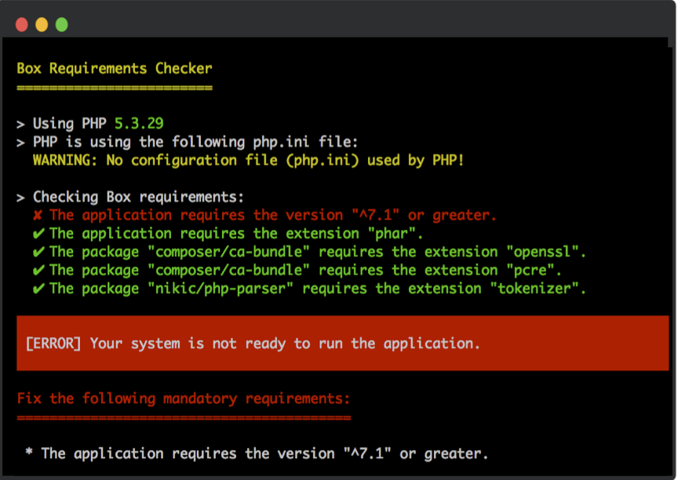
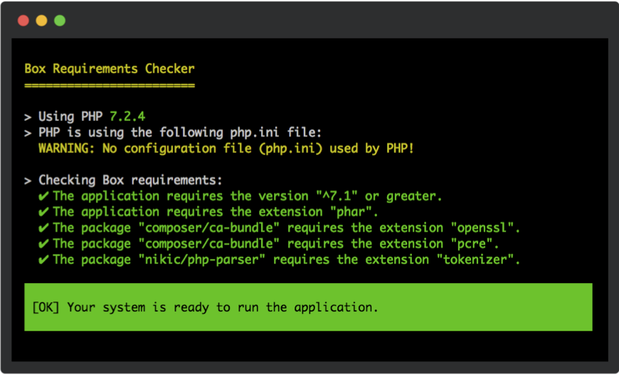

Requirements checker
Unlike when installing a library with Composer, no constraint check is done by default with a PHAR. As a result, if you are using a PHAR of an application compatible with PHP 7.2 in PHP 7.0 or a PHP environment which does not have a required extension, it will simply break with a non-friendly error.
By default, when building your PHAR, Box will look up for the PHP versions and extensions required to execute your
application according to your composer.json and composer.lock files and ship a micro (~280KB uncompressed and >40KB
compressed) requirements checker which will be executed when starting your PHAR.
The following are screenshots of the output when an error occurs (left) in a non-quiet verbosity and when all requirements are passing on the right in debug verbosity.
 
Warning
this check is still done within the PHAR. As a result, if the required extension to open the PHAR due to the compression algorithm is not loaded, a hard failure will still appear: the requirement checker cannot be executed before that.
Configuration
Box will retrieve all the (non-dev) requirements including the ones of the dependencies if there is any. When a
composer.lock file is present, it will take the information from it. If not found, it will fallback on the
composer.json but that it will not be able to retrieve any information regarding the dependencies requirements in this
case.
PHP version requirements
To register a minimal PHP version required by your application, you can register it as a requirement:
{
"require": {
"php": "^7.2"
}
}
Note that configuring the application to run in a specific version will not affect it. So in the following example:
{
"require": {
"php": "^7.1"
},
"config": {
"platform": {
"php": "7.1.10"
}
}
}
In the above example, Composer will emulate PHP 7.1.10 environment. This makes sure that when installing the
dependencies, they will be compatible with 7.1.10+. It will however not affect the application requirements and as a
result Box will pick ^7.1 as the PHP requirement.
Extension configuration requirements
To register an extension, you can specify it like so:
{
"require": {
"ext-mbstring": "*"
}
}
Note that although you can specify a specific version for the extension requirements, Box does not currently support it and will simply understand that the given extension is required regardless of the version specified.
Polyfills
Box supports the following polyfills:
symfony/polyfill-<extension-name>for any extension- paragonie/sodium_compat for the
libsodiumextension - phpseclib/mcrypt_compat for the
mcryptextension
For example, if you have the following configuration:
{
"require": {
"ext-mbstring": "*",
"symfony/polyfill-mbstring": "^1.0"
}
}
Then the mbstring extension will not be required since its polyfill has been found.
Functions requirements/polyfills are not supported at the moment, see #131.
Integration with a custom stub
If you are using your own stub instead of the Box autogenerated one, you can still require the requirement checker
manually. When building the PHAR, Box will add the requirement checker in the .box directory. As a result, you can
require the requirement checker script .box/check_requirements.php like so:
// Stub file
// Example where the PHAR used has the alias `acme.phar`
require 'phar://acme.phar/.box/check_requirements.php';
The requirement checker works down to PHP 7.2.5+. If however you are including it after your custom code which is not PHP 7.2.5+ compatible, it will fail before the requirements are being checked.
Skipping the requirement checker
When the requirement checker is shipped, you can always skip it by setting the environment variable
BOX_REQUIREMENT_CHECKER to 0. For example if you are using the box.phar which ships a requirement checker and want
to skip it, you can run:
$ BOX_REQUIREMENT_CHECKER=0 php box.phar